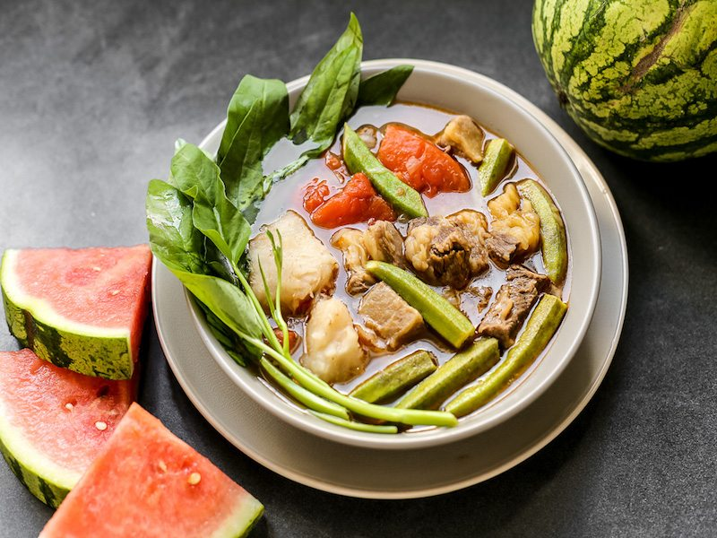

Sinigang Recipe

A bowl of sinigang
Sinigang is an incredibly easy to make, hearty, sour soup!
Today I will be teaching you to make one the national dishes of the Philippines.
Ingredients Needed:
- Pork shoulder
- Spinach
- Mama Sita's Sinigang mix
- Green beans
- 5 quarts of water
Step-by-step instructions:
- Cut the pork shoulder into 2 inch rectangles.
- Sear the meat on all sides in a large pot
- Fill the pot with necessary amount of water
- Wait until water boils and skim impurities off the top
- Add Mama Sitas sinigang mix and lower heat to a simmer
- Cook for 30 min to an hour
- Add the green beans when there is 10 minutes remaining and spinach
when there is 5 minutes left
- Enjoy!